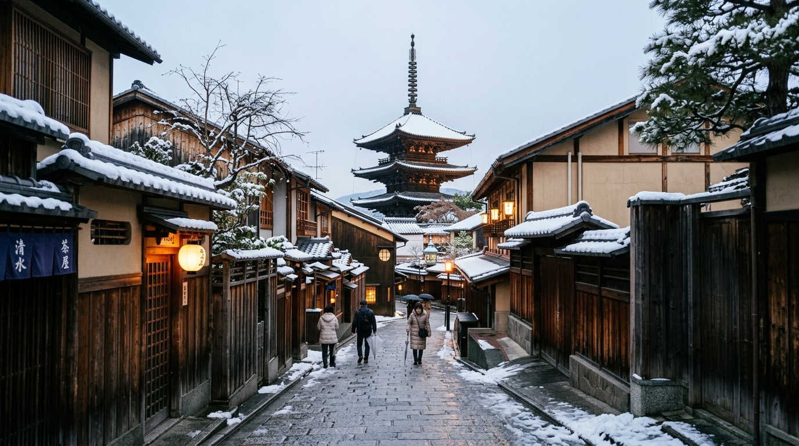

🚆 Osaka → Kyoto Transfer • Check-in Rinn Shirakawa South & Gion
Geographic route trail and live time-tracked stops. Click any card or pin to focus.
Day 3 Chronological Timeline & Connected Transit
8 Connected StopsCheck out of Plum Hotel Osaka by 9:00am. Walk 3 min to Daikokucho Station ➔ Board Midosuji Line to Umeda Station (12 min, ¥240). Walk through underground concourse (3 min, 200m) to Hankyu Osaka-Umeda Station.
Board Hankyu Kyoto Line Limited Express at Hankyu Osaka-Umeda Station. Fast, comfortable direct train into Kyoto-Kawaramachi Station terminus (43 min, ¥410). Arrives right in downtown Kyoto next to Gion.
Take Exit 1B from Kyoto-Kawaramachi Station ➔ Walk east 8 min (600m) across Shijo Bridge over Kamogawa River into Gion. Follow the weeping willows along the Shirakawa canal north to Rinn Shirakawa South. Drop luggage at reception.
Walk 5 min to Kyoto-Kawaramachi Station ➔ Take Hankyu Line 1 stop to Karasuma Station (2 min, ¥170) ➔ Exit 13, walk 4 min (300m) to Halal Ramen Ayam Ya Karasuma (famed for creamy tori paitan broth, spicy ramen, and tsukemen).
Walk 15 min back across Kamogawa river into Gion Shirakawa. Check-in at Rinn Shirakawa South (opens 3:00pm). Settle into boutique Kyoto machiya rooms and perform prayer.
Step directly outside the hotel into Gion Shirakawa preservation district. Stroll along the Shirakawa canal over Tatsumi Bridge, photograph traditional wooden machiya teahouses, and walk along the Kamogawa riverbanks during twilight blue hour.
Walk south 5 min (350m) along Yamatooji-dori to Halal Wagyu Yakiniku Panga Gion. Premium Halal-certified Japanese A5 Wagyu beef grilled table-side.